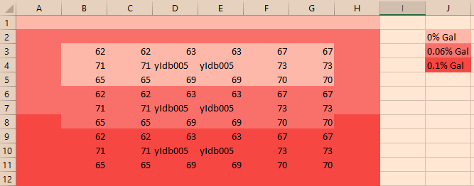
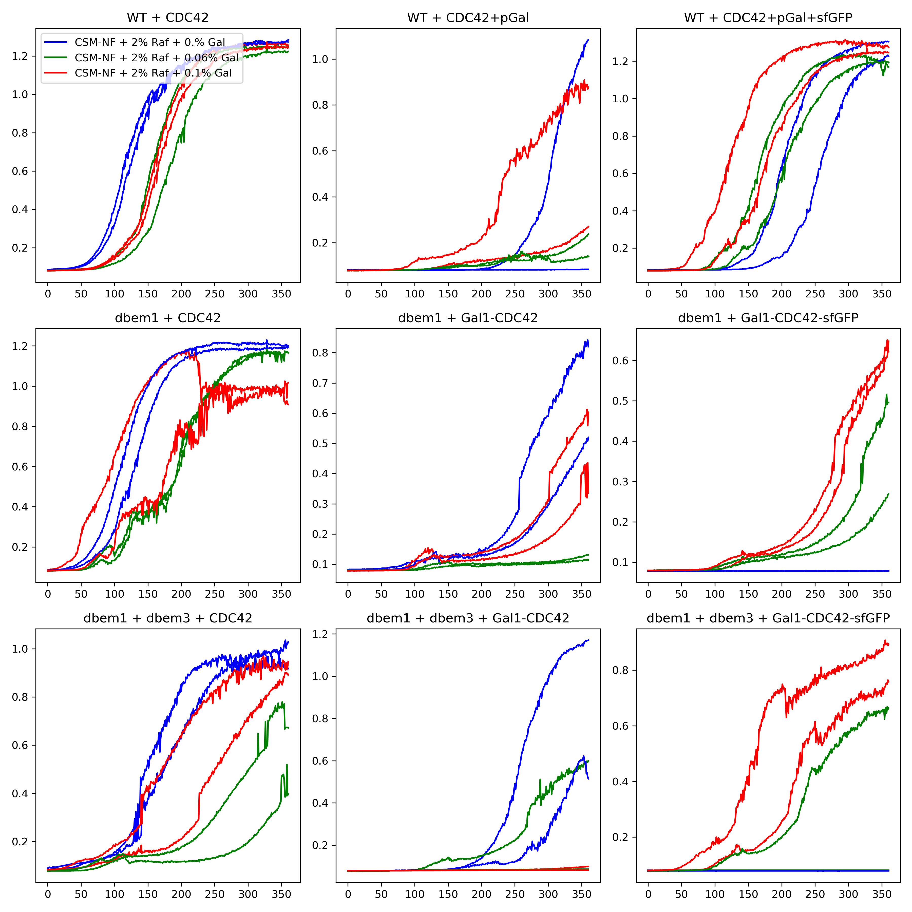
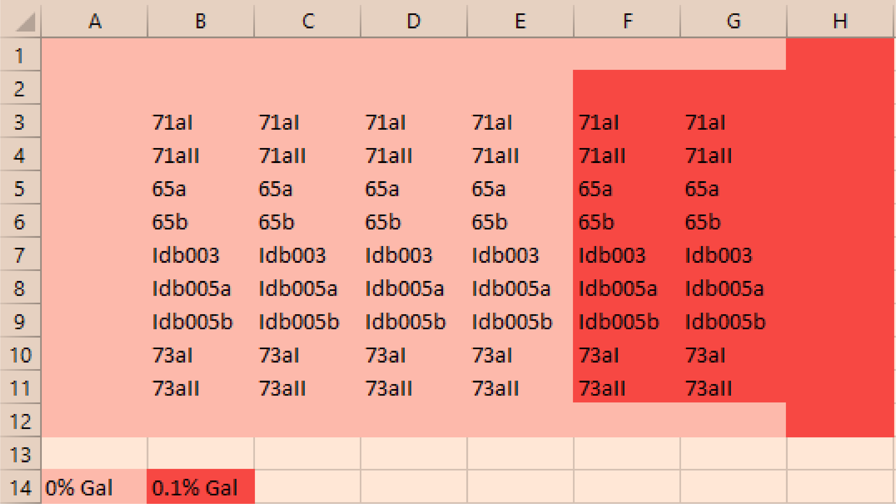
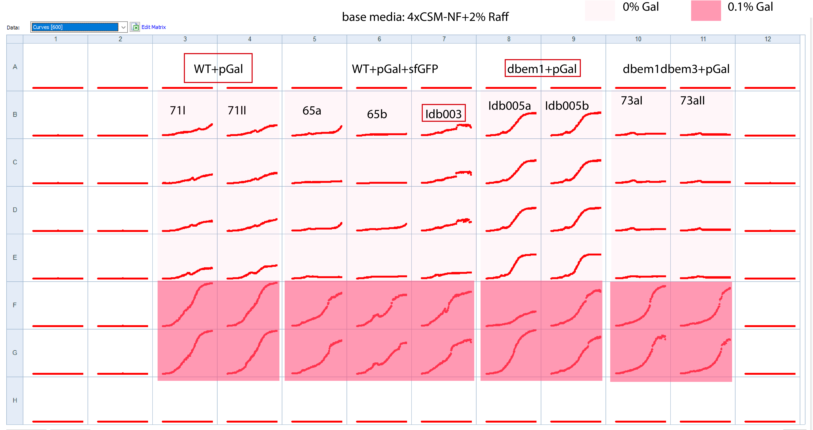
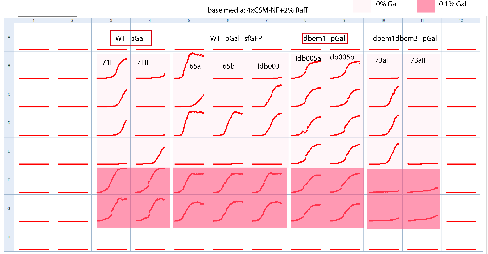

Title: Supp controls on sfgFP influence on the bulk growth¶
Date¶
25012021-
Objective¶
To discard the influence of the sfGFP on the Cdc42 dependency for growth
Method¶
Strains:
Strain |
Name |
|---|---|
BEM1 BEM3 CDC42 |
YWKD062(2) |
BEM1 BEM3 GAL1-CDC42 |
YWKD071aI,YWKD071aII |
BEM1 BEM3 GAL1-sfGFP-CDC42 |
YWKD065a,YWKD065b,YIdB003 |
\(\Delta\)bem1 BEM3 CDC42 |
YWKD063a,YWKD068a,YWKD063 |
\(\Delta\)bem1 BEM3 GAL1-CDC42 |
YIdB005(2) |
\(\Delta\)bem1 BEM3 GAL1-sfGFP-CDC42 |
YWKD069a(2) |
\(\Delta\)bem1 \(\Delta\)bem3 CDC42 |
YWKD067a(2),YWKD067b |
\(\Delta\)bem1 \(\Delta\)bem3 GAL1-CDC42 |
YWKD073aI,YWKD073aII |
\(\Delta\)bem1 \(\Delta\) bem3 GAL1-sfGFP-CDC42 |
YWKD070a,YWKD070c |
Measure in 0,0.06% and 0.1% Galactose concentrations in 36C , using two technical replicates per plate . (If possible do two plates)
Booking of the plate reader Biotek on 10022021
[x] Incubation on 08022021
[x] Layout modified in the moment (because a pipette mistake):

[x] Experiment started at 11:30
[x] Linear 3 mins:30 secs and orbital 3 mins:30 secs shaking before each measurement at 36C
Protocol¶
Growth assay protocol (p.66 Werner PhD Thesis)
First, a 96 well plate is inoculated with about 5 ul of cells into 100 ul medium per well in a predefined layout. In addition, sterile MiliQ is put in the four reservoirs in the perimeter (4 times 2 mL) and 77 times 100 ul in the reservoirs between wells. The wells are then covered by a sticker and with the lid on, it is placed shaking slowly (100-150 rpm) for 2 days at 30C..
Then, using a multi-pipette, 10 ul of cells of this plate are transferred to a new plate which has 90 ul of media in the same layout, which dilutes the cells a factor of ten. This is then repeated for a new plate, where 5 ul of cells are transferred to 95 ul media, to ultimately accomplish a 200x dilution compared to the original plate. When making the dilution, wells are gently mixed before dilution by pipetting up and down. The 200x diluted plate is then sealed by a transparent sticker, and covered with the lid to minimize evaporation (and water is placed in the reservoirs as before).
Measurement protocol:
The first 1000s linearly pre-shakes (amplitude 1 mm) the plate, before shaking just before each measurement round in a 380 second interval. These rounds start with 90” linear shaking (amplitude 2 mm), 90” orbital shaking (amplitude 1.5 mm), 90” linear shaking (amplitude 1 mm), waiting 10” and then OD-600 +/-9 nm measurements (25 flashes, 5ms settle time). Rounds were executed in two consecutive loops of 24 hours, after which OD values were documented in a excel sheet.
Results¶

Plate layout to check all WT+pGal biological replicates and mutants+pGal+sfGFP¶

Observations from the incubation
2uL of melted glycerol stocks per well
started at 10:30
Media base: 4xCSM-NF+2%Raff

Measuring at 36C at 11:00
1uL of cells from incubation to 100uL media (easier to pipette)~100X dilution

Checking the strains from the glycerol stocks¶
Plating all glycerol stocks in selection media¶
Plates:
CSM-URA +2% Raffinose + G418(for dbem1) + NAT(for dbem1dbem3)(for the plates , I autoclaved the agar with MiliQ and then added the SC-URA mixture with the sugar, one note here is that I added the SC-URA without filter sterilize to the 80C liquid agar.)
Results of the plating(the plates do not seem to be contaminated):
Strain |
Name |
Growth plates from 25022021 |
|---|---|---|
BEM1 BEM3 CDC42 |
YWKD062(2) |
+ |
BEM1 BEM3 GAL1-CDC42 |
YWKD071aI,YWKD071aII |
- |
BEM1 BEM3 GAL1-sfGFP-CDC42 |
YWKD065a,YWKD065b,YIdB003 |
- |
\(\Delta\)bem1 BEM3 CDC42 |
YWKD063a,YWKD068a,YWKD063 |
|
\(\Delta\)bem1 BEM3 GAL1-CDC42 |
YIdB005(2) |
- |
\(\Delta\)bem1 BEM3 GAL1-CDC42 heterozygous diploid |
YWKD054a,b,c |
+ |
\(\Delta\)bem1 BEM3 GAL1-sfGFP-CDC42 |
YWKD069a(2) |
- |
\(\Delta\)bem1 \(\Delta\)bem3 CDC42 |
YWKD067a(2),YWKD067b |
|
\(\Delta\)bem1 \(\Delta\)bem3 GAL1-CDC42 |
YWKD073aI,YWKD073aII |
- |
\(\Delta\)bem1 \(\Delta\) bem3 GAL1-sfGFP-CDC42 |
YWKD070a,YWKD070c |
- |
Inoculating all glycerol stocks in selection media¶
To mimic biotek conditions and se if there is a contamination on the stocks , I will :
[x] Inoculate the cells to liquid media CSM-URA+2% Raffinose
[x] Streak from the liquid culture to a plate of the same kind.
Strain |
Name |
Growth from liquid culture 26022021 |
|---|---|---|
BEM1 BEM3 CDC42 |
YWKD062(2) |
+ |
BEM1 BEM3 GAL1-CDC42 |
YWKD071aI,YWKD071aII |
- |
BEM1 BEM3 GAL1-sfGFP-CDC42 |
YWKD065a,YWKD065b,YIdB003 |
- |
\(\Delta\)bem1 BEM3 CDC42 |
YWKD063a,YWKD068a,YWKD063 |
|
\(\Delta\)bem1 BEM3 GAL1-CDC42 |
YIdB005(2) |
- |
\(\Delta\)bem1 BEM3 GAL1-CDC42 heterozygous diploid |
YWKD054a,b,c |
+ |
\(\Delta\)bem1 BEM3 GAL1-sfGFP-CDC42 |
YWKD069a(2) |
- |
\(\Delta\)bem1 \(\Delta\)bem3 CDC42 |
YWKD067a(2),YWKD067b |
|
\(\Delta\)bem1 \(\Delta\)bem3 GAL1-CDC42 |
YWKD073aI,YWKD073aII |
- |
\(\Delta\)bem1 \(\Delta\) bem3 GAL1-sfGFP-CDC42 |
YWKD070a,YWKD070c |
- |
2nd round pGal checks BioteK¶
Incubation 08032021-10:00
1ul of thawed glycerol stocks (WT+pGal+sfGFP and all pGal strains)
The well G9 was not contaminated it was empty, from the beginning, so I made a mistake and did not add any media on it.

10032021- measurements in 36C
Plate the grown up cells from dbem1+pGAl strains in CSM-uRA+0% gal+2% Raff
Not visible growth on 12032021
12032021- Results of measurements

Cleaning up the dbem1+pGal glycerol stock¶
hypothesis: It is contaminated with plain WT
Strategy : Plating in CSM+0.1% gal and then replica plate in CSM+0% and SC-ura+0.1% gal (right ones)
[x] Plating in CSM+0.1% GAL (15032021)
CSM autoclaved media
200ul of diluted glycerol stocks , 10ul cells in 500ul MiliQ, to facilitate the efficacy of the replica plate.
[ ] Replica plating in CSM+0% Gal (wrong colonies should pop out) and CSM+0.1%Gal +G418 (Right colonies should pop out)
Conclusion¶
Unexpected growth of the pGal1 strains in 0% Gal from the bulk growth in the Biotek.
The phenotype check on liquid and solid media are consistent between each other.
What is striking is that ywkd062 did grow on SC-URA and it should not be because it is just a plain WT strain. Maybe for next experiment we should use yll3a.
The dbem1+pGal strain is completely wrong(contaminated?) from 120320221 measurements.